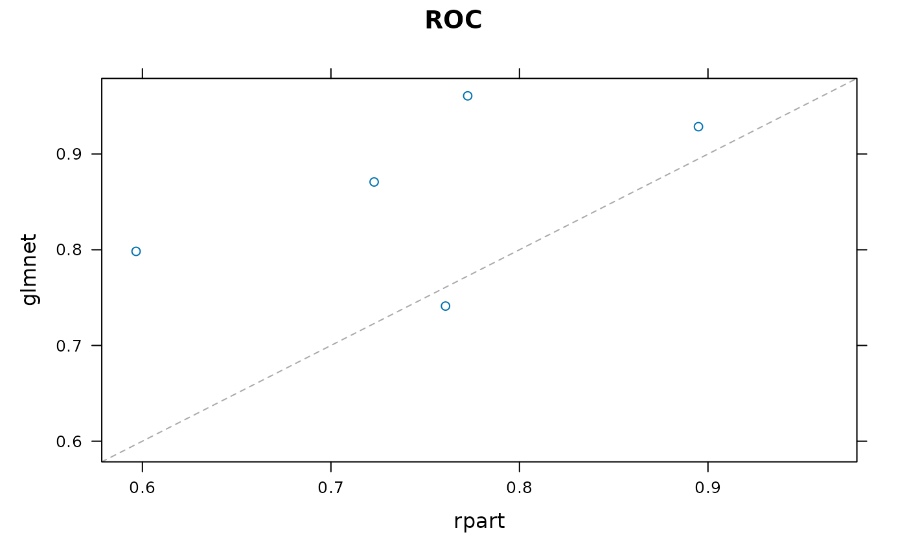

A Brief Introduction to caretEnsemble
Zach Deane-Mayer
2024-08-26
Source:vignettes/caretEnsemble-intro.Rmd
caretEnsemble-intro.RmdcaretEnsemble is a package for making ensembles of caret
models. You should already be somewhat familiar with the caret package
before trying out caretEnsemble.
caretEnsemble has 3 primary functions:
caretList,
caretEnsemble and
caretStack. caretList is used
to build lists of caret models on the same training data, with the same
re-sampling parameters. caretEnsemble and
caretStack are used to create ensemble models from such
lists of caret models. caretEnsemble uses a glm to create a
simple linear blend of models and caretStack uses a caret
model to combine the outputs from several component caret models.
caretList
caretList is a flexible function for fitting many
different caret models, with the same resampling parameters, to the same
dataset. It returns a convenient list of caret objects
which can later be passed to caretEnsemble and
caretStack. caretList has almost exactly the
same arguments as train (from the caret package), with the
exception that the trControl argument comes last. It can
handle both the formula interface and the explicit x,
y interface to train. As in caret, the formula interface
introduces some overhead and the x, y
interface is preferred.
caretEnsemble has 2 arguments that can be used to
specify which models to fit: methodList and
tuneList. methodList is a simple character
vector of methods that will be fit with the default train
parameters, while tuneList can be used to customize the
call to each component model and will be discussed in more detail later.
First, lets build an example dataset (adapted from the caret
vignette):
data(Sonar, package = "mlbench")
set.seed(107L)
inTrain <- caret::createDataPartition(y = Sonar$Class, p = 0.75, list = FALSE)
training <- Sonar[inTrain, ]
testing <- Sonar[-inTrain, ]
model_list <- caretEnsemble::caretList(
Class ~ .,
data = training,
methodList = c("glmnet", "rpart")
)
print(summary(model_list))
#> The following models were ensembled: glmnet, rpart
#>
#> Model accuracy:
#> model_name metric value sd
#> <char> <char> <num> <num>
#> 1: glmnet ROC 0.8599370 0.09069233
#> 2: rpart ROC 0.7495693 0.10710959(As with train, the formula interface is convenient but
introduces move overhead. For large datasets the explicitly passing
x and y is preferred). We can use the
predict function to extract predictions from this object
for new data:
| glmnet | rpart |
|---|---|
| 0.9398307 | 0.1250000 |
| 0.1428399 | 0.1250000 |
| 0.2041884 | 0.8181818 |
| 0.5180661 | 0.8181818 |
| 0.5951758 | 0.8181818 |
| 0.5055788 | 0.8181818 |
If you desire more control over the model fit, use the
caretModelSpec to construct a list of model specifications
for the tuneList argument. This argument can be used to fit
several different variants of the same model, and can also be used to
pass arguments through train down to the component
functions (e.g. trace=FALSE for nnet):
model_list_big <- caretEnsemble::caretList(
Class ~ .,
data = training,
methodList = c("glmnet", "rpart"),
tuneList = list(
rf1 = caretEnsemble::caretModelSpec(method = "rf", tuneGrid = data.frame(.mtry = 2L)),
rf2 = caretEnsemble::caretModelSpec(method = "rf", tuneGrid = data.frame(.mtry = 10L), preProcess = "pca"),
nn = caretEnsemble::caretModelSpec(method = "nnet", tuneLength = 2L, trace = FALSE)
)
)
print(summary(model_list_big))
#> The following models were ensembled: rf1, rf2, nn, glmnet, rpart
#>
#> Model accuracy:
#> model_name metric value sd
#> <char> <char> <num> <num>
#> 1: rf ROC 0.9233333 0.03092727
#> 2: rf ROC 0.8573319 0.06415653
#> 3: nnet ROC 0.8746849 0.04153548
#> 4: glmnet ROC 0.8589216 0.03577354
#> 5: rpart ROC 0.7144048 0.12164189Finally, you should note that caretList does not support
custom caret models. Fitting those models are beyond the scope of this
vignette, but if you do so, you can manually add them to the model list
(e.g. model_list_big[["my_custom_model"]] <- my_custom_model).
Just be sure to use the same re-sampling indexes in
trControl as you use in the caretList
models!
caretEnsemble
caretList is the preferred way to construct list of
caret models in this package, as it will ensure the resampling indexes
are identical across all models. Lets take a closer look at our list of
models:

As you can see from this plot, these 2 models are uncorrelated, and the rpart model is occasionally anti-predictive, with a one re-sample showing AUC of 0.46.
We can confirm the 2 model”s correlation with the
modelCor function from caret (caret has a lot of convenient
functions for analyzing lists of models):
caret::modelCor(caret::resamples(model_list))
#> glmnet rpart
#> glmnet 1.0000000 0.5172171
#> rpart 0.5172171 1.0000000These 2 models make a good candidate for an ensemble: their predictions are fairly uncorrelated, but their overall accuracy is similar. We do a simple, linear greedy optimization on AUC using caretEnsemble:
greedy_ensemble <- caretEnsemble::caretEnsemble(model_list)
print(summary(greedy_ensemble))
#> The following models were ensembled: glmnet, rpart
#>
#> Model Importance:
#> glmnet_M glmnet_R rpart_M rpart_R
#> 0.3533 0.3942 0.1271 0.1254
#>
#> Model accuracy:
#> model_name metric value sd
#> <char> <char> <num> <num>
#> 1: ensemble ROC 0.8788866 0.05319158
#> 2: glmnet ROC 0.8599370 0.09069233
#> 3: rpart ROC 0.7495693 0.10710959
model_preds <- predict(model_list, newdata = testing, excluded_class_id = 2L)
ens_preds <- predict(greedy_ensemble, newdata = testing, excluded_class_id = 2L)
model_preds$ensemble <- ens_preds
auc <- caTools::colAUC(model_preds, testing$Class)
print(auc)
#> glmnet rpart ensemble
#> M vs. R 0.8472222 0.7746914 0.8657407The ensemble has an AUC on the training set resamples of 0.87 which is about 1.9% better than the best individual model.
Note that the levels for the Sonar Data are “M” and “R”, where M is level 1 and R is level 2. “M” stands for “metal cylinder” and “R” stands for rock. M is the positive class, so we exclude class 2L from our predictions. You can set excluded_class_id = 0L
p <- predict(greedy_ensemble, newdata = head(testing), excluded_class_id = 0L)
knitr::kable(p, format = "markdown")| M | R |
|---|---|
| 0.2801736 | 0.7198264 |
| 0.8619769 | 0.1380231 |
| 0.6300334 | 0.3699666 |
| 0.4009026 | 0.5990974 |
| 0.3446125 | 0.6553875 |
| 0.4100184 | 0.5899816 |
We can also use varImp to extract the variable importances from each member of the ensemble, as well as the final ensemble model:
caretStack
glm_ensemble <- caretEnsemble::caretStack(model_list, method = "glm")
model_preds2 <- model_preds
model_preds2$ensemble <- predict(glm_ensemble, newdata = testing, excluded_class_id = 2L)
print(caTools::colAUC(model_preds2, testing$Class))
#> glmnet rpart ensemble
#> M vs. R 0.8472222 0.7746914 0.867284
CF <- coef(glm_ensemble$ens_model$finalModel)[-1L]
print(CF / sum(CF))
#> glmnet rpart
#> 0.7154119 0.2845881Note that glm_ensemble$ens_model is a regular caret
object of class train. The glm-weighted model weights (glm
vs rpart) and test-set AUCs are extremely similar to the caretEnsemble
greedy optimization.
We can also use more sophisticated ensembles than simple linear weights, but these models are much more susceptible to over-fitting, and generally require large sets of resamples to train on (n=50 or higher for bootstrap samples). Lets try one anyways:
gbm_ensemble <- caretEnsemble::caretStack(
model_list,
method = "gbm",
verbose = FALSE,
tuneLength = 5L
)
model_preds3 <- model_preds
model_preds3$ensemble <- predict(gbm_ensemble, newdata = testing, excluded_class_id = 2L)
caTools::colAUC(model_preds3, testing$Class)
#> glmnet rpart ensemble
#> M vs. R 0.8472222 0.7746914 0.8657407In this case, the sophisticated ensemble is no better than a simple weighted linear combination. Non-linear ensembles seem to work best when you have:
- Lots of data.
- Lots of models with similar accuracy.
- Your models are uncorrelated: each one seems to capture a different aspect of the data, and different models perform best on different subsets of the data.